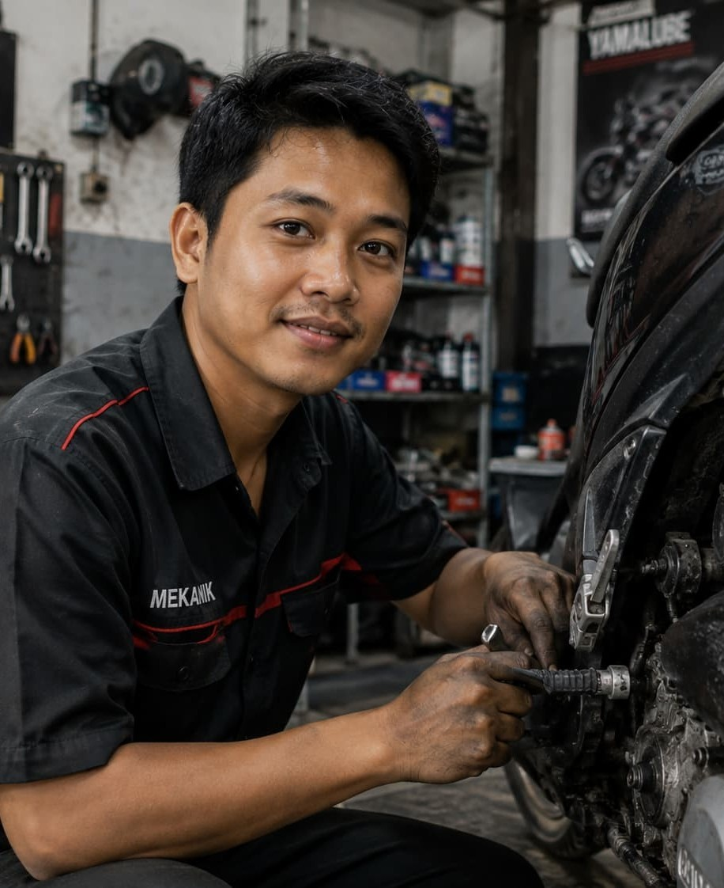

Lulusan SMA dengan pengalaman lebih dari 4 tahun menangani servis mesin, kelistrikan, dan perawatan berkala sepeda motor matic maupun manual di bengkel umum.

Saya lulusan SMA Negeri 1 Sukoharjo tahun 2020. Selepas SMA saya belajar otomotif secara langsung di bengkel dengan sistem magang, dan kini sudah lebih dari 4 tahun menekuni pekerjaan sebagai mekanik sepeda motor. Saya terbiasa menangani servis rutin, perbaikan mesin, sistem kelistrikan, hingga overhaul ringan, serta selalu berusaha memberikan hasil kerja yang rapi dan bisa dipercaya pelanggan.
Menangani servis berkala, perbaikan mesin, dan diagnosa kerusakan sepeda motor matic dan manual dari berbagai merek. Melatih mekanik junior di bengkel.
Melakukan servis rutin, ganti oli, tune up, dan perbaikan sistem kelistrikan sepeda motor pelanggan harian.
Aktif mengikuti kegiatan ekstrakurikuler otomotif sekolah dan sering membantu servis kendaraan warga sekitar rumah sejak masih bersekolah.